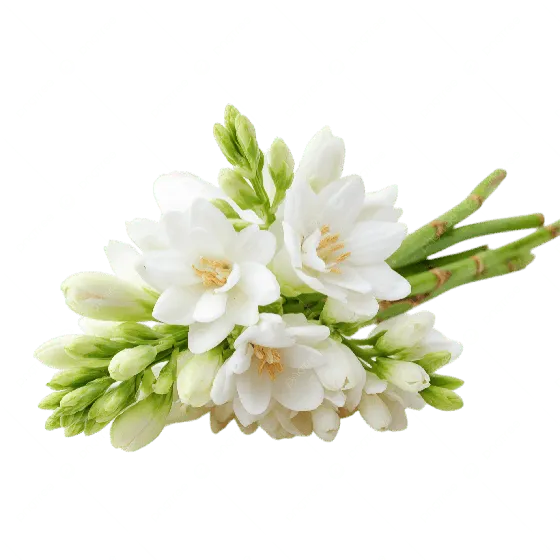

Oil Grimoire
Tuberose Oil
Tuberose Oil (Polianthes tuberosa) captures the richly scented, intensely sweet fragrance of this white flower native to Mexico. True tuberose absolute is rarely available commercially, making substitute recipes valuable.
Extraction & Characteristics
Source: Fresh flowers of Polianthes tuberosa, picked before the petals open.
Method: Solvent extraction produces a concrete and absolute. An essential oil is also obtained by distillation of the concrete.
Appearance: The absolute is a dark orange or brown soft paste.
Scent: Heavy, sweet-floral, sometimes slightly spicy, tenacious.
Principal constituents: Methyl benzoate, methyl anthranilate, benzyl alcohol, butyric acid, eugenol, nerol, farnesol, and geraniol, among others.
Therapeutic Actions
Narcotic.
Blending
Blends well with Gardenia Absolute, Violet Leaf Absolute, Opopanax Essential Oil, Rose Oil, Jasmine Absolute, Carnation Oil, Orris Absolute, Peru Balsam Essential Oil, Neroli Essential Oil, and Ylang Ylang Essential Oil.
Safety
No safety data is available. The absolute is often adulterated.
Where You Will Encounter It
Used in high-class perfumes, especially of an oriental, floral, or fantasy type. Occasionally used for flavouring confectionery and some beverages. Pure absolute extraction of tuberose is one of the most expensive natural flower oils available to the modern perfumer.
Botanical Information
Scientific name: Polianthes tuberosa
Botanical family: Asparagaceae
Origin: Mexico
Source: Flowers
Scent Profile
Intensely sweet and richly floral. Tuberose has one of the most powerful and heady fragrances in the floral kingdom, often described as narcotic or intoxicating.
Magickal Uses
The synthesized oil is used in love-attracting mixtures. The intense, seductive fragrance draws romantic attention and enhances personal magnetism.
Tuberose bouquet is a wonderful relaxer, making it useful in peace blends. Add to formulas designed to promote calm and tranquility.
Tuberose's heady scent makes it ideal for workings involving sensuality, passion, and romantic encounters.
As a night-blooming flower, tuberose connects to lunar energies and nocturnal workings.
Substitution
Since true tuberose absolute is rarely available, use the Tuberose Bouquet recipe combining Ylang-Ylang Oil, Rose Oil, Jasmine Oil, and just a hint of Neroli Oil.
Traditional Grimoire Notes
Known as Mistress of the Night, this is a powerful aphrodisiac. Promotes peace and enhances psychic abilities. Considered a deeply physical and sensory oil.